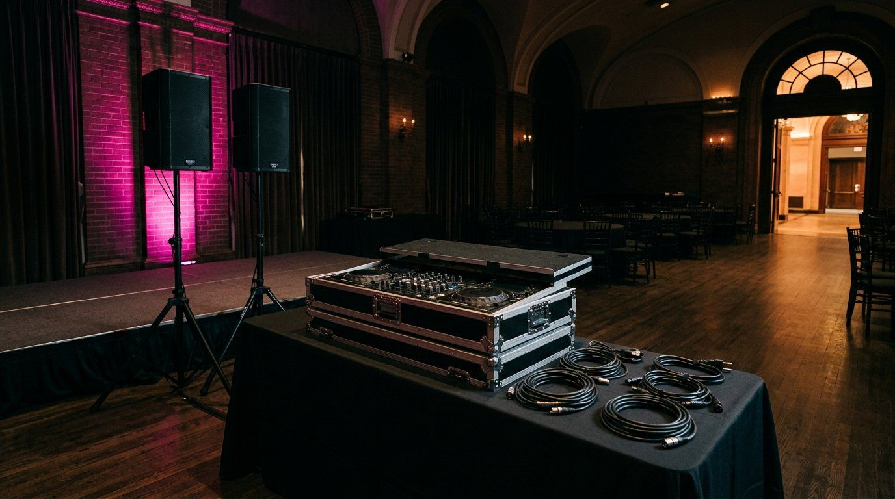

The craft side of DJing
Beatmatching by ear, transitions that hold a dancefloor, recording a clean mix and the unglamorous work of getting booked. Technique is what makes the gear worth owning.

Gear gets the attention, but technique is what people actually hear. The order below is deliberate: tempo first, then phrasing, then recording, then promotion. Skipping ahead usually means learning a habit you have to unlearn later.
Start with the guides people actually need
See every guide →How to Mix for Beginners
Beatmatching, phrasing and EQ explained in the order you should practise them.

Beatmatch by Ear
The skill that makes every other technique easier, and the one that still gets people hired.

Record a DJ Mix
Gain staging, routing and export settings for a mix that sounds right on other systems.

How to Get DJ Gigs
What promoters want to see, how to approach them, and how to turn sets into bookings.
What this hub fixes
This hub connects the next phase after setup: learning core DJ skills, recording cleaner mixes, preparing for gigs, and turning practice time into finished sets you can share or perform.
Follow the DJ Skills Learning Path
A suggested route from first mixing and beatmatching to recording your mixes and preparing for gigs.
Follow the learning path →Core skillHow to Mix Music for Beginners
Basic phrasing, cueing, transitions, EQ, and practice structure.
Learn mixing → FoundationHow to Beatmatch Manually
Manual tempo matching before relying on sync as a crutch.
Practice beatmatching → Guided learningBest Online DJ Courses
Compare Udemy, Skillshare, and free YouTube learning options.
Compare →PublishingHow to Record a DJ Mix
Signal routing, levels, file prep, and simple recording workflows.
Record a mix → DistributionHow to Create DJ Mixes for YouTube
Video formatting, copyright risk, presentation, and upload workflow.
Publish a mix → PromotionHow to Promote DJ Mixes
Turn recorded mixes into proof of taste and booking material.
Promote mixes → BusinessHow to Get DJ Gigs
Move from practice output to rooms, events, and repeat bookings.
Find gigs →Recommended learning order
| Stage | Page | Outcome |
|---|---|---|
| 1 | Mix music for beginners | Learn phrase-aware transitions and basic EQ. |
| 2 | Beatmatch manually | Stop depending blindly on sync and learn tempo discipline. |
| 3 | Record a DJ mix | Create objective evidence of progress. |
| 4 | Upload mixes to YouTube | Publish carefully with format and copyright awareness. |
| 5 | Get DJ gigs | Use mixes and local proof to get booked. |
Performance skills after the first setup
This hub sits after the gear and software decision. Once a beginner can load tracks, cue cleanly, and hear a proper headphone mix, the next goal is performance skill: phrasing, beatmatching, EQ transitions, recording mixes, and eventually playing for real listeners.
Build clean transitions
Practice phrasing and EQ movement before relying on effects or fast cuts.
Record and review
Listening back exposes timing, volume, and song-selection problems that are easy to miss while mixing.
Prepare for gigs
Paid events require backups, communication, library preparation, and reliable setup habits.
Before you buy: five quick checks
Price is the easy part. These are the checks that decide whether the purchase still looks sensible six months in.
Official product and support pages
Use these official pages to confirm current specifications, software compatibility, and support details before buying.
Frequently Asked Questions
What skill should I practice after buying DJ gear?
Start with cueing, phrase counting, beatmatching, EQ, and recording short mixes. Effects, scratching, and complex transitions should come after clean basic blends.
How do I know whether I am improving?
Record practice sets and listen back for timing drift, volume jumps, clashing vocals, and messy exits. Improvement is easiest to measure when you compare recordings over time.
Should beginners learn manual beatmatching?
Yes. Even if you use sync later, manual beatmatching teaches timing, phrasing, and recovery skills that matter when beatgrids are wrong or gear behaves unexpectedly.
When should I start looking for gigs?
Start once you can prepare a reliable set, recover from mistakes, and record a clean mix that represents the style you want to play publicly.
How to move through the skills hub
Use this hub as a sequence, not a menu. Learn basic mixing first, then manual beatmatching, then recording, then publishing, then gig preparation. Each step creates evidence that the previous step is working: a cleaner transition, a steadier beatmatch, a better recording, or a more professional set submission.